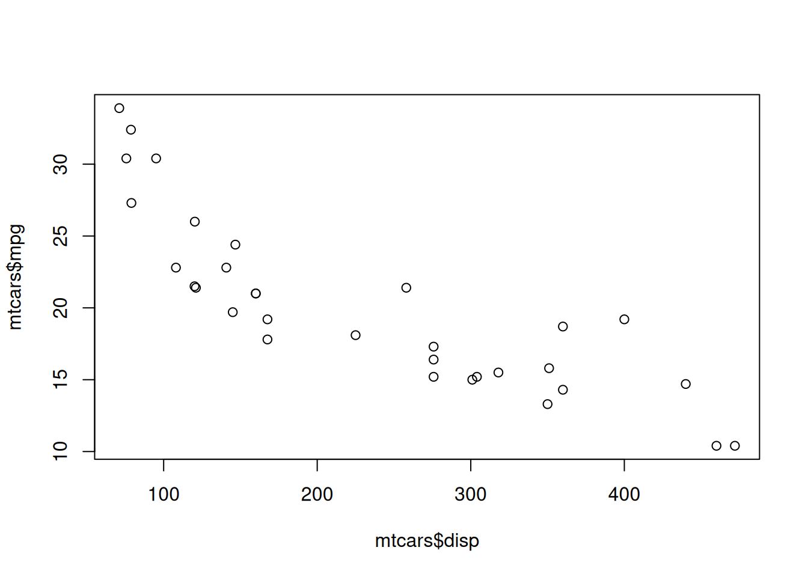
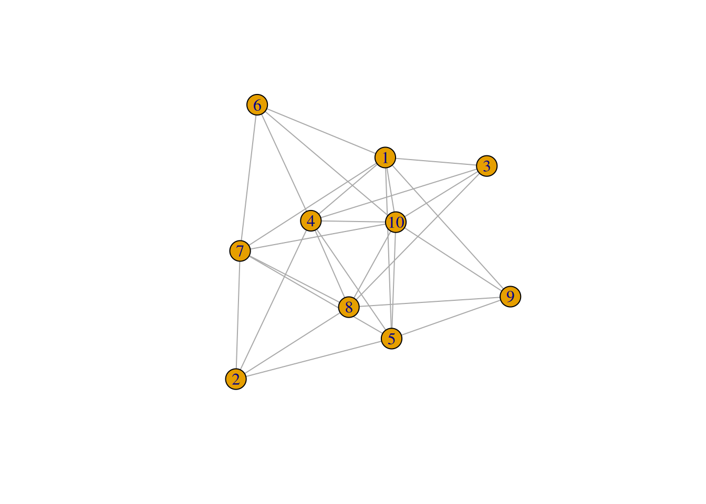

x <- c(43,643,765)
print(paste("The mean of x is", mean(x)))[1] "The mean of x is 483.666666666667"This is a Quarto Notebook. The goal of Quarto Notebooks is to write documents and reports that intersperse text and code. They can be used for writing reports, creating slides, or even writing books.
The text is written in markdown. It has lots of different formatting options. Just take a look at this document for example, such as the “Introduction” header or the links in this section.
You can either interact with Quarto files within VSCode or “render” them into finished documents. To create a finished document, open the document that you want to change, and look at the top right. The square icon will render the document. By default, this will create a new PDF file in the same directory as this file, and will open that file in the Quarto Preview window.
If that doesn’t work, you may need to install tinytex first. To do that, run the following code in the terminal at the bottom of VSCode: quarto install tinytex.
Once you get PDFs working, try changing the format at the top of this document to html or docx. Then render the document again. This time, it should create an HTML file (or Word Document) in the same directory as this file.
When you execute code within VSCode, the code runs in the terminal. If there is visual output, then it will appear in a pane to the right.
Try executing this chunk by clicking Run Cell or by placing your cursor inside the code chunk it and pressing Ctrl+Shift+Enter.
Run the code below both ways
x <- c(43,643,765)
print(paste("The mean of x is", mean(x)))[1] "The mean of x is 483.666666666667"Ctrl+Shift+Enter will run the whole chunk. If you want to run just the line of code that your cursor is on, then press Ctrl+Enter (Cmd+Return on Macs).
Code that will be run is marked with three backticks (`) followed by {r}, and ends with three more backticks. The simplest way to create a code block is to do Ctrl+Shift+I. This will create a code block with the cursor in the middle, and you can just start typing your code.
By default, the code and the output will appear in the created document, but you can set echo=FALSE and it will just show the output. Typically, you would want to do this when you’re creating a plot.
For example, the code below creates a scatterplot. For now, don’t worry about what all of the code means—we’ll come to that in later lessons. Just note that when you render the document, it doesn’t show the plot(mtcars$disp, mtcars$mpg) code—it just shows the scatterplot.
When you run this code in VSCode, it should show the scatterplot in the right pane. If it doesn’t, then you may have to click on “R:(not attached)” in the bottom right corner of the screen. This should connect your session to R, and then it should work.

The last concept for today is “packages”. A package is a collection of functions and/or data. For example, igraph and tidygraph are two packages that make it much, much easier to work with network data.
There are two steps to using a package. First, you need to install it. This downloads the package to your computer. You only need to do this once.
Step two is to load it into R from your computer. This brings it into R so that R can use it. This is done with the library command.
Hopefully everything worked and you already installed the packages that you will need. Let’s check.
Note from Dr. Foote: In these example documents, I will typically hide the code I use to produce plots and figures (by setting echo=FALSE). You shouldn’t do that, and your documents should show the code used to produce figures.
I just find Dr. Foote soooo inspiring. He is just the best professor at Purdue and I can’t wait to learn more about social networks!
hist(iris$Petal.Length)If you do it correctly, you should see a histogram plot (a figure with a bunch of vertical gray bars)

library(igraph). Then run the code. If it works, you should see a message that says Attaching package: ‘igraph’. If you don’t see that message, then you need to install the package. To do that, run the following code in an R terminal at the bottom of VSCode. To get to an R terminal, just click Run Cell on one of the code cells above. Then, in the R terminal type: install.packages('igraph').library(igraph)
Attaching package: 'igraph'The following objects are masked from 'package:stats':
decompose, spectrumThe following object is masked from 'package:base':
unionCreate a new code block, and copy and paste the following into it, and then run it. Note that the first line, library(igraph) loads the igraph package into R. The next few lines create a random network and then make a simple plot of it.
library(igraph)
G = sample_gnp(10, .6)
plot(G)